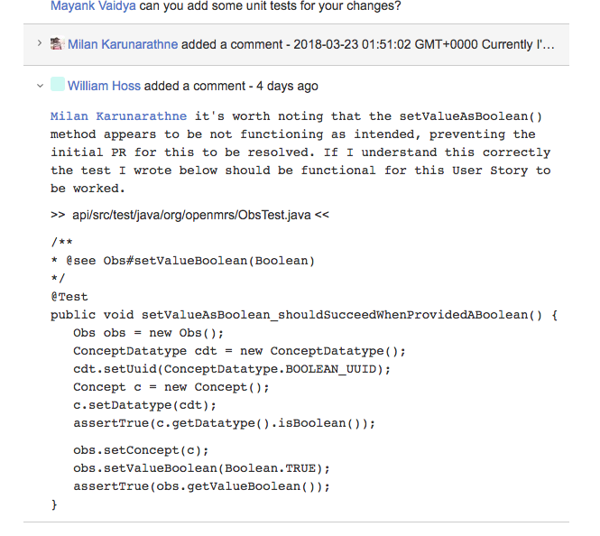

This is a compilation of what the OpenFOSS team produced while working in an agile team on a large software engineering project called OpenMRS. The OpenFOSS team is comprised of the following individuals:
The OpenFOSS team worked to provide value in the form of backlog grooming and code contributions to OpenMRS which develops and maintains a humanitarian open source medical record system platform. This document contains the product deliverables from the OpenFOSS team throughout their senior CS4260 course. The examples within demonstrate the value added to OpenMRS, as well as provide the context and content required for someone to continue development with the provided contributions.
The OpenMRS platform has a all-inclusive installation option they call their OpenMRS-Standalone product. The installation instructions for this service appeared to have an error regarding the default login credentials for the webapp. This was reported in two user stories within the OpenMRS backlog STAND-79 and STAND-54. Our team's pull request made updated the documentation to match the code in production.
** the raw git diff exists at the bottom of this document under ** Code Contribution #1 STAND-79
TRUNK-3401 is an OpenMRS backlog user story that had been outstanding since 2012. This user story addressed a bug that was discovered in an older version of OpenMRS. In order to provide backwards compatibility, the OpenMRS community wanted an existing method to be updated to automatically handle missing medical providers. Our teams changes resolved this issue and allowed for users of older versions of OpenMRS to easily upgrade.
OpenFOSS team resolved this user story by contributing the following: We added tests to ensure that we got the desired outcome, which ensures this code does not regress in the future. We created a method allowing a patient to be assigned a medical provider if one does not exist for a patient. If the provider is already assigned, it will return the existing provider.
Our contribution also reflects recommendations made by the OpenMRS community members. Including: Additional logging Re-ordering of conditional checks within our contribution. Documentation changes within our code to ensure that any new changes made to this method do not regress the code and intent.
OpenMRS' automated code review of this contribution, showed that we met all of their quality standards, which included (but were not limited to):
** the raw git diff exists at the bottom of this document under ** Code Contribution #2 TRUNK-3401
OpenMRS’ users occasionally need to intersect large collections of patients to find common traits among them. OpenMRS' extant intersection function did not produce a true intersection, so we refactored the function and corrected its behavior. For more details about the requirements, you can view the OpenMRS User Story
This contribution added 46 lines of code to the product; it added one new test (29 lines) and refactored one function (17 lines). This contribution represents 20 hours of effort, and you may view the exact changes we made in the corresponding diff under Code Contribution #3.
OpenMRS' automated code review of this contribution, showed that we met all of their quality standards, which included (but were not limited to):
Additionally, to address the needs of our code's maintainers, we created a UML activity diagram depicting the intended behavior of the function. The diagram can be found under Code Contribution #3 UML Activity Diagram.
** the raw git diff exists at the bottom of this document under ** Code Contribution #3 TRUNK-5331
In order to enhance the functionality of the OpenMRS core, OpenFOSS added the option to filter members of collections. Doing so, improves performance and reduces resources when the filter is necessary.
OpenMRS' automated code review of this contribution, showed that we met all of their quality standards, which included (but were not limited to):
** the raw git diff exists at the bottom of this document under ** Code Contribution #4 TRUNK-5382
This artifact is the result of OpenFOSS attempting to contribute to TRUNK-188. This user story described a bug that occurs when trying to access a specific module. After looking into this issue, our team discovered that the bug reported here is no longer relevant to the current version of OpenMRS. This was due to the MRNgen module that was causing the errors to be replaced with a newer module IDGen. Knowing this we shared our findings and made recommendations to the maintainers to close this user story, since then the OpenMRS maintainers have regressed this ticket to design work.
** the raw git diff exists at the bottom of this document under ** Code Contribution #1 TRUNK-188
This artifact is the result of the OpenFOSS team working together on a code contribution, however our team found that some of the underlying code required to complete this user story was not correctly implemented. As such, we reached out to inform the OpenMRS maintainers that these issues existed, and contributed tests within the comments of the user story. This led to the creation of TRUNK-5391 which more accurately describes and tracks the issue.

** the raw git diff exists at the bottom of this document under ** Code Contribution #1 TRUNK-5025
The OpenMRS community depends on contributors to maintain and correct their product backlog. The OpenFOSS team found that the OpenMRS team had duplicated one of their user stories and alerted them to the potential redundancy. OpenMRS has since marked TRUNK-5372 as a duplicate of the other user story we located, TRUNK-5366.
** the raw git diff exists at the bottom of this document under ** Code Contribution #1 TRUNK-5372
The OpenFOSS team added value by finding and opening a bug report to the OpenMRS community to be assessed. We also contributed various unit tests to verify the bug has been resolved. This ensures that this bug is known to the OpenMRS community and is tracked until it’s resolved.
** the raw git diff exists at the bottom of this document under ** Code Contribution #1 TRUNK-5391
This section provides information required for a future developer to continue development with OpenFOSS team’s existing code. This document has existing links to the OpenFOSS team's contributions. The directory structure of these contributions is as follows:
Code-Contributions
Backlog-Contributions
The Code-Contributions contains directories of the user stories the OpenFOSS team worked on throughout the semester. Within each of these contribution directories, the following items exist:
Backlog-Contributions contains directories of the OpenMRS backlog user stories that we contributed to. Within each of these contribution directories, the following items exist:
Any static html files contain the information relevant to the OpenFOSS contribution. However, external links still exist within these html files. These external links are not indicative of OpenFOSS’ contribution. As an example, within a given Pull_Request directory, the ‘Conversation’, ‘Commits’, and ‘Files changed’ tabs function statically.

OpenMRS code is subject to the terms of the Mozilla Public License, v. 2.0. If a copy of the MPL has not been distributed with this file, one can obtain a copy of this licence within this directory as "Mozilla_Public_License.txt" or at mozilla.org/MPL/2.0. OpenMRS is also distributed under the terms of the Healthcare Disclaimer located at openmrs.org/license which can also be found within this directory as "Healthcare_Disclaimer.txt". Therefore, anyone is free to make modifications to the project files as far as the terms of the license permit.
diff --git a/src/main/config/README.txt b/src/main/config/README.txt
index 8f84c17..e6ad96b 100644
--- a/src/main/config/README.txt
+++ b/src/main/config/README.txt
@@ -71,7 +71,7 @@ or
LOGIN DETAILS (remember to change the password immediately after installation in a production environment)
=============
username - admin
-password - test
+password - Admin123
CHANGING THE USERNAME AND PASSWORD
diff --git a/api/src/main/java/org/openmrs/api/ProviderService.java b/api/src/main/java/org/openmrs/api/ProviderService.java
index 5d7ffef8b..2a166769c 100644
--- a/api/src/main/java/org/openmrs/api/ProviderService.java
+++ b/api/src/main/java/org/openmrs/api/ProviderService.java
@@ -17,6 +17,7 @@ import org.openmrs.Person;
import org.openmrs.Provider;
import org.openmrs.ProviderAttribute;
import org.openmrs.ProviderAttributeType;
+import org.openmrs.User;
import org.openmrs.annotation.Authorized;
import org.openmrs.annotation.Handler;
import org.openmrs.util.PrivilegeConstants;
@@ -321,4 +322,6 @@ public interface ProviderService extends OpenmrsService {
*/
@Authorized( { PrivilegeConstants.GET_PROVIDERS })
public Provider getUnknownProvider();
+
+ public Provider createProviderFromUser(User user);
}
diff --git a/api/src/main/java/org/openmrs/api/impl/ProviderServiceImpl.java b/api/src/main/java/org/openmrs/api/impl/ProviderServiceImpl.java
index a4ef63fb5..79241739d 100644
--- a/api/src/main/java/org/openmrs/api/impl/ProviderServiceImpl.java
+++ b/api/src/main/java/org/openmrs/api/impl/ProviderServiceImpl.java
@@ -17,6 +17,7 @@ import org.openmrs.Person;
import org.openmrs.Provider;
import org.openmrs.ProviderAttribute;
import org.openmrs.ProviderAttributeType;
+import org.openmrs.User;
import org.openmrs.api.APIException;
import org.openmrs.api.ProviderService;
import org.openmrs.api.context.Context;
@@ -25,7 +26,8 @@ import org.openmrs.customdatatype.CustomDatatypeUtil;
import org.openmrs.util.OpenmrsConstants;
import org.openmrs.util.OpenmrsUtil;
import org.springframework.transaction.annotation.Transactional;
-
+import org.slf4j.Logger;
+import org.slf4j.LoggerFactory;
/**
* Default implementation of the {@link ProviderService}. This class should not be used on its own.
* The current OpenMRS implementation should be fetched from the Context.
@@ -36,7 +38,7 @@ import org.springframework.transaction.annotation.Transactional;
public class ProviderServiceImpl extends BaseOpenmrsService implements ProviderService {
private ProviderDAO dao;
-
+ private static final Logger log = LoggerFactory.getLogger(ProviderServiceImpl.class);
/**
* Sets the data access object for Concepts. The dao is used for saving and getting concepts
* to/from the database
@@ -293,4 +295,18 @@ public class ProviderServiceImpl extends BaseOpenmrsService implements ProviderS
return getProviderByUuid(Context.getAdministrationService().getGlobalProperty(
OpenmrsConstants.GP_UNKNOWN_PROVIDER_UUID));
}
+
+ @Override
+ public Provider createProviderFromUser(User user) {
+ Provider p = new Provider();
+ if (user == null || user.getPerson() == null) {
+ throw new APIException("User can not be null");
+ } else if (Context.getProviderService().getProvidersByPerson(user.getPerson()).isEmpty()) {
+ p.setPerson(user.getPerson());
+ return Context.getProviderService().saveProvider(p);
+ } else {
+ log.warn("Provider already exists for user");
+ return Context.getProviderService().getProvidersByPerson(user.getPerson()).iterator().next();
+ }
+ }
}
diff --git a/api/src/test/java/org/openmrs/api/ProviderServiceTest.java b/api/src/test/java/org/openmrs/api/ProviderServiceTest.java
index bebf7e07b..a1a2882c7 100644
--- a/api/src/test/java/org/openmrs/api/ProviderServiceTest.java
+++ b/api/src/test/java/org/openmrs/api/ProviderServiceTest.java
@@ -33,6 +33,7 @@ import org.openmrs.PersonName;
import org.openmrs.Provider;
import org.openmrs.ProviderAttribute;
import org.openmrs.ProviderAttributeType;
+import org.openmrs.User;
import org.openmrs.api.context.Context;
import org.openmrs.customdatatype.datatype.FreeTextDatatype;
import org.openmrs.test.BaseContextSensitiveTest;
@@ -519,5 +520,38 @@ public class ProviderServiceTest extends BaseContextSensitiveTest {
person.setNames(personNames);
return person;
}
+
+ @Test
+ public void createProviderFromUser_shouldGetUserAndCreateProvider() {
+ User u = Context.getUserService().getUser(19901);
+ assertNotNull(Context.getPersonService().getPerson(19901));
+ assertNotNull(Context.getPersonService().getPersonName(19901));
+ assertNotNull(u);
+ Provider p = Context.getProviderService().createProviderFromUser(u);
+ assertNotNull(p);
+ }
+
+ @Test
+ public void createProviderFromUser_shouldThrowErrorsWhenUserIsNull() {
+ try {
+ User u = Context.getUserService().getUser(1337);
+ Context.getProviderService().createProviderFromUser(u);
+ } catch (APIException e) {
+ assertEquals("User can not be null", e.getMessage());
+ }
+ }
+
+ @Test
+ public void createProviderFromUser_shouldReturnProviderifUserExists(){
+ User u = Context.getUserService().getUser(19901);
+ assertNotNull(u);
+ Provider p = Context.getProviderService().createProviderFromUser(u);
+ assertNotNull(p);
+ int numberOfProviderBefore = Context.getProviderService().getAllProviders().size();
+ Provider p2 = Context.getProviderService().createProviderFromUser(u);
+ assertNotNull(p2);
+ assertEquals(Context.getProviderService().getAllProviders().size(), numberOfProviderBefore);
+ assertEquals(p2, p);
+ }
}
diff --git a/api/src/test/resources/org/openmrs/api/include/ProviderServiceTest-initial.xml b/api/src/test/resources/org/openmrs/api/include/ProviderServiceTest-initial.xml
index 79b5c7855..5535da9d6 100644
--- a/api/src/test/resources/org/openmrs/api/include/ProviderServiceTest-initial.xml
+++ b/api/src/test/resources/org/openmrs/api/include/ProviderServiceTest-initial.xml
@@ -20,10 +20,11 @@
<provider provider_id="7" name="provider7" person_id="501" identifier="8C761" creator="1" date_created="2005-01-01 00:00:00.0" retired="0" uuid="161b3002-6b95-11e0-93c3-18a905e044dc" />
<provider provider_id="8" name="provider8" person_id="502" identifier="8C762" creator="1" date_created="2005-01-01 00:00:00.0" retired="0" uuid="1f9e8336-6b95-11e0-93c3-18a905e044dc" />
<provider provider_id="9" name="provider8" person_id="2" identifier="8C763" creator="1" date_created="2005-01-01 00:00:00.0" retired="1" uuid="1f9e8336-6b95-11e0-93c3-18a905e044dn" />
+ <person person_id="19901" gender="M" dead="false" creator="1" birthdate_estimated="0" date_created="2017-08-15 15:57:09.0" voided="false" uuid="86526ed6-3c11-11de-a0ba-001e378rr98ur"/>
+ <person_name person_name_id="19901" preferred="true" person_id="19901" prefix="Mr." given_name="icap" middle_name="" family_name="tech" family_name_suffix="Esq." creator="1" date_created="2005-09-22 00:00:00.0" voided="false" uuid="399e3a7b-6482-487d-94ce-c07bb3ca3uir2"/>
<person_name person_name_id="9352" preferred="true" person_id="2" prefix="Mr." given_name="william" middle_name="" family_name="williamson" family_name_suffix="Esq." creator="1" date_created="2005-09-22 00:00:00.0" voided="true" void_reason="changed" uuid="399e3a7b-6482-487d-94ce-c07bb3ca3ccw9"/>
<person_name person_name_id="9353" preferred="false" person_id="7" given_name="Collet" middle_name="james" family_name="Hussey" family_name2="Ricky" creator="1" date_created="2006-01-18 00:00:00.0" voided="true" void_reason="Changed" uuid="a65c347e-1384-493a-a55b-d325924acd9w"/>
-
<provider_attribute_type provider_attribute_type_id="1" name="place" datatype="org.openmrs.customdatatype.datatype.FreeTextDatatype" uuid="058d4dcf-7bb0-41f4-93b6-d49580ed9ea6" creator="1" date_created="2005-01-01 00:00:00.0" min_occurs="0" retired="false"/>
<provider_attribute provider_attribute_id="321" provider_id="2" attribute_type_id="1" value_reference="2011-04-25" uuid="823382cd-5faa-4b57-8b34-fed33b9c8c65" creator="1" date_created="2005-01-01 00:00:00.0" voided="false" />
-
+ <users user_id="19901" person_id="19901" system_id="icap" username="icaptechTeam" password="eeeda5c0cc3837151b2d61cfeab54a91fb0c27d" salt="42af4c437a47cd778a54f6564d71b3cd6e8e5ca" secret_question="" creator="1" date_created="2008-08-15 15:57:09.0" changed_by="1" date_changed="2008-08-18 11:51:56.0" retired="false" uuid="c98a1558-e131-11de-babe-001e378eu67d"/>
</dataset>
diff --git a/api/src/main/java/org/openmrs/Cohort.java b/api/src/main/java/org/openmrs/Cohort.java
index 23fcaa989..36949986b 100644
--- a/api/src/main/java/org/openmrs/Cohort.java
+++ b/api/src/main/java/org/openmrs/Cohort.java
@@ -268,8 +268,32 @@ public class Cohort extends BaseChangeableOpenmrsData {
Cohort ret = new Cohort();
ret.setName("(" + (a == null ? "NULL" : a.getName()) + " * " + (b == null ? "NULL" : b.getName()) + ")");
if (a != null && b != null) {
- ret.getMemberships().addAll(a.getMemberships());
- ret.getMemberships().retainAll(b.getMemberships());
+
+ Collection<CohortMembership> retMembers = ret.getMemberships();
+
+ /*
+ * Remove duplicate Patient IDs from the intersection
+ */
+ for (CohortMembership cm: a.getMemberships()) {
+ for (CohortMembership cm2: b.getMemberships()) {
+ if(cm2.getPatientId().equals(cm.getPatientId())){
+ boolean idExists = false;
+ for(CohortMembership cmret: retMembers){
+
+ if (cmret.getPatientId().equals(cm.getPatientId())){
+ idExists = true;
+ }
+ }
+ if(!idExists) {
+ CohortMembership retainedMember = new CohortMembership(cm.getPatientId(), null);
+ retainedMember.setEndDate(cm.getEndDate());
+ retainedMember.setVoided(cm.getVoided());
+ retainedMember.setUuid(cm.getUuid());
+ retMembers.add(retainedMember);
+ }
+ }
+ }
+ }
}
return ret;
}
diff --git a/api/src/test/java/org/openmrs/CohortTest.java b/api/src/test/java/org/openmrs/CohortTest.java
index d6e84f94e..258882ac2 100644
--- a/api/src/test/java/org/openmrs/CohortTest.java
+++ b/api/src/test/java/org/openmrs/CohortTest.java
@@ -13,6 +13,10 @@ import org.apache.commons.lang3.StringUtils;
import org.junit.Assert;
import org.junit.Test;
+import static org.junit.Assert.assertEquals;
+import static org.junit.Assert.assertNull;
+import static org.junit.Assert.assertTrue;
+
import java.text.SimpleDateFormat;
import java.util.ArrayList;
import java.util.Arrays;
@@ -36,7 +40,6 @@ public class CohortTest {
Cohort cohort = new Cohort("name", "description", ids);
Arrays.stream(ids).forEach(id -> assertTrue(cohort.contains(id)));
-
}
@Test
@@ -165,4 +168,34 @@ public class CohortTest {
double secondsToSet = (endTime - startTime)/1000;
Assert.assertTrue("Setting cohort of size " + cohortSize + " took " + secondsToSet + " seconds", secondsToSet < 5);
}
+
+ @Test
+ public void intersect_shouldNotContainDuplicatePatientIDs() throws Exception {
+
+ SimpleDateFormat dateFormat = new SimpleDateFormat("yyyy-MM-dd HH:mm:ss");
+ Date startDate = dateFormat.parse("2017-01-01 00:00:00");
+ Date startDate2 = dateFormat.parse("20017-02-15 00:00:00");
+
+ Cohort cohortA = new Cohort(3);
+ Cohort cohortB = new Cohort (4);
+
+ CohortMembership membershipAOne = new CohortMembership(7, startDate);
+ CohortMembership membershipATwo = new CohortMembership(7, startDate2);
+ CohortMembership membershipBOne = new CohortMembership(7, startDate);
+ CohortMembership membershipBTwo = new CohortMembership(7, startDate2);
+
+ cohortA.addMembership(membershipAOne);
+ cohortA.addMembership(membershipATwo);
+
+ cohortB.addMembership(membershipBOne);
+ cohortB.addMembership(membershipBTwo);
+
+ Cohort cohortIntersect = Cohort.intersect(cohortA,cohortB);
+ cohortIntersect.getMemberships().forEach(m -> {
+ assertTrue(m.getPatientId().equals(7));
+ assertNull(m.getStartDate());
+ });
+ assertEquals(1, cohortIntersect.getMemberships().size());
+
+ }
}
diff --git a/api/src/main/java/org/openmrs/Concept.java b/api/src/main/java/org/openmrs/Concept.java
index e3a7f0e4f..2dabc769c 100644
--- a/api/src/main/java/org/openmrs/Concept.java
+++ b/api/src/main/java/org/openmrs/Concept.java
@@ -1556,6 +1556,25 @@ public class Concept extends BaseOpenmrsObject implements Auditable, Retireable,
}
return Collections.unmodifiableList(conceptMembers);
}
+
+
+ /**
+ * If <code>includeRetired</code> is true
+ * {@link Concept}s
+ *
+ * @param includeRetired true/false whether to include the retired members
+ * @return List<Concept> the Concepts that are members of this Concept's set
+ * @should return set members and includes retired ones if includeRetired is set to true
+ * @should not return retired members if includeRetired is false
+ */
+ public List<Concept> getSetMembers(boolean includeRetired){
+ if (includeRetired) {
+ return getSetMembers();
+ } else {
+ return getSetMembers().stream()
+ .filter(a -> !a.getRetired())
+ .collect(Collectors.toList());
+ }
+ }
/**
* Appends the concept to the end of the existing list of concept members for this Concept
diff --git a/api/src/test/java/org/openmrs/ConceptTest.java b/api/src/test/java/org/openmrs/ConceptTest.java
index 9946f47c0..95a9657d9 100644
--- a/api/src/test/java/org/openmrs/ConceptTest.java
+++ b/api/src/test/java/org/openmrs/ConceptTest.java
@@ -23,9 +23,11 @@ import java.util.Locale;
import java.util.Set;
import org.junit.Assert;
+import org.junit.Before;
import org.junit.Test;
import org.openmrs.api.APIException;
import org.openmrs.api.ConceptNameType;
+import org.openmrs.api.ConceptService;
import org.openmrs.api.context.Context;
import org.openmrs.test.BaseContextSensitiveTest;
@@ -33,6 +35,15 @@ import org.openmrs.test.BaseContextSensitiveTest;
* Behavior-driven tests of the Concept class.
*/
public class ConceptTest extends BaseContextSensitiveTest {
+ protected static final String CONCEPT_XML_DATASET_PACKAGE_PATH = "org/openmrs/api/include/ConceptTest.xml";
+
+ private ConceptService service;
+
+ @Before
+ public void before() throws Exception {
+ service = Context.getConceptService();
+ executeDataSet(CONCEPT_XML_DATASET_PACKAGE_PATH);
+ }
/**
* When asked for a collection of compatible names, the returned collection should not include
@@ -570,6 +581,65 @@ public class ConceptTest extends BaseContextSensitiveTest {
Assert.assertEquals(1, setMembers.size());
setMembers.add(new Concept());
}
+
+ /**
+ * @see Concept#getSetMembers()
+ */
+ @Test
+ public void getSetMembers_shouldReturnTheSameAsgetSetMembersIfincludeRetiredIsTrue() throws Exception {
+ executeDataSet(CONCEPT_XML_DATASET_PACKAGE_PATH);
+
+ Concept c = new Concept();
+
+ Concept setMember1 = service.getConcept(867543);
+ c.addSetMember(setMember1);
+
+ Concept setMember2 = service.getConcept(1234567);
+ c.addSetMember(setMember2);
+
+ Concept setMember3 = service.getConcept(8675439);
+ c.addSetMember(setMember3);
+
+ Concept setMember4 = service.getConcept(12345679);
+ c.addSetMember(setMember4);
+
+ List<Concept> setMembers = c.getSetMembers(true);
+
+ Assert.assertEquals(4, setMembers.size());
+
+ Assert.assertFalse(setMembers.get(0).getRetired());
+ Assert.assertFalse(setMembers.get(1).getRetired());
+ Assert.assertTrue(setMembers.get(2).getRetired());
+ Assert.assertTrue(setMembers.get(3).getRetired());
+ }
+
+ /**
+ * @see Concept#getSetMembers(boolean)
+ */
+ @Test
+ public void getSetMembers_shouldNotReturnRetiredInSetMembersIfincludeRetiredIsFalse() throws Exception {
+ executeDataSet(CONCEPT_XML_DATASET_PACKAGE_PATH);
+
+ Concept c = new Concept();
+
+ Concept setMember1 = service.getConcept(867543);
+ c.addSetMember(setMember1);
+
+ Concept setMember2 = service.getConcept(1234567);
+ c.addSetMember(setMember2);
+
+ Concept setMember3 = service.getConcept(8675439);
+ c.addSetMember(setMember3);
+
+ Concept setMember4 = service.getConcept(12345679);
+ c.addSetMember(setMember4);
+
+ List<Concept> setMembers = c.getSetMembers(false);
+
+ Assert.assertEquals(2, setMembers.size());
+ Assert.assertEquals(setMember1, setMembers.get(0));
+ Assert.assertEquals(setMember2, setMembers.get(1));
+
+ setMembers.forEach(member -> Assert.assertEquals(true, !member.getRetired()));
+ }
+
/**
* @see Concept#addSetMember(Concept)
diff --git a/api/src/test/resources/org/openmrs/api/include/ConceptTest.xml b/api/src/test/resources/org/openmrs/api/include/ConceptTest.xml
new file mode 100644
index 000000000..37fc8451a
--- /dev/null
+++ b/api/src/test/resources/org/openmrs/api/include/ConceptTest.xml
@@ -0,0 +1,19 @@
+<?xml version='1.0' encoding='UTF-8'?>
+<!--
+
+ This Source Code Form is subject to the terms of the Mozilla Public License,
+ v. 2.0. If a copy of the MPL was not distributed with this file, You can
+ obtain one at http://mozilla.org/MPL/2.0/. OpenMRS is also distributed under
+ the terms of the Healthcare Disclaimer located at http://openmrs.org/license.
+
+ Copyright (C) OpenMRS Inc. OpenMRS is a registered trademark and the OpenMRS
+ graphic logo is a trademark of OpenMRS Inc.
+
+-->
+<dataset>
+ <concept concept_id="867543" retired="0" datatype_id="4" class_id="3" is_set="false" creator="1" date_created="2008-08-15 15:27:51.0" uuid="568b58c8-e878-11e0-950d-00248140a5e5"/>
+ <concept concept_id="1234567" retired="0" datatype_id="4" class_id="5" is_set="false" creator="1" date_created="2008-08-15 15:27:51.0" uuid="568b58c8-e878-11e0-950d-00248140a5e6"/>
+
+ <concept concept_id="8675439" retired="1" datatype_id="4" class_id="3" is_set="false" creator="1" date_created="2008-08-15 15:27:51.0" uuid="568b58c8-e878-11e0-950d-00248140a5e7"/>
+ <concept concept_id="12345679" retired="1" datatype_id="4" class_id="5" is_set="false" creator="1" date_created="2008-08-15 15:27:51.0" uuid="568b58c8-e878-11e0-950d-00248140a5e8"/>
+</dataset>
{kind=link}